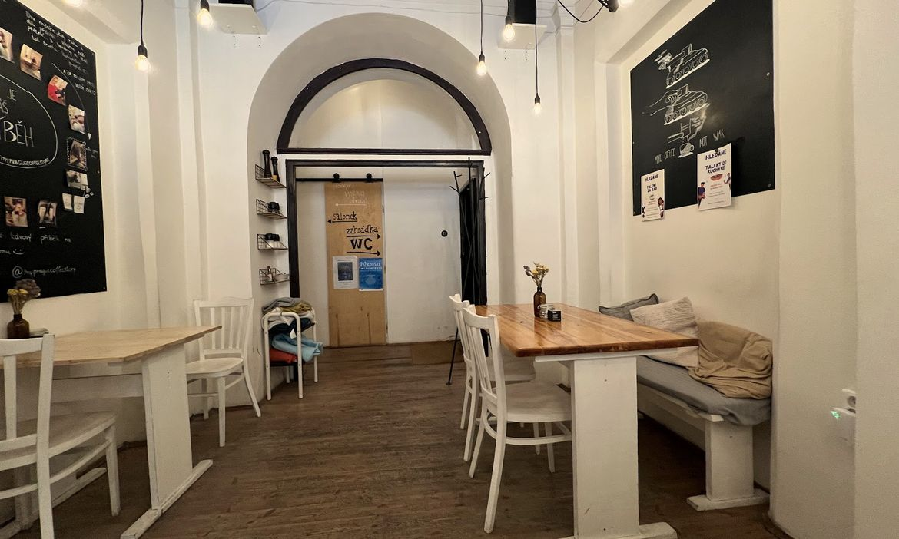
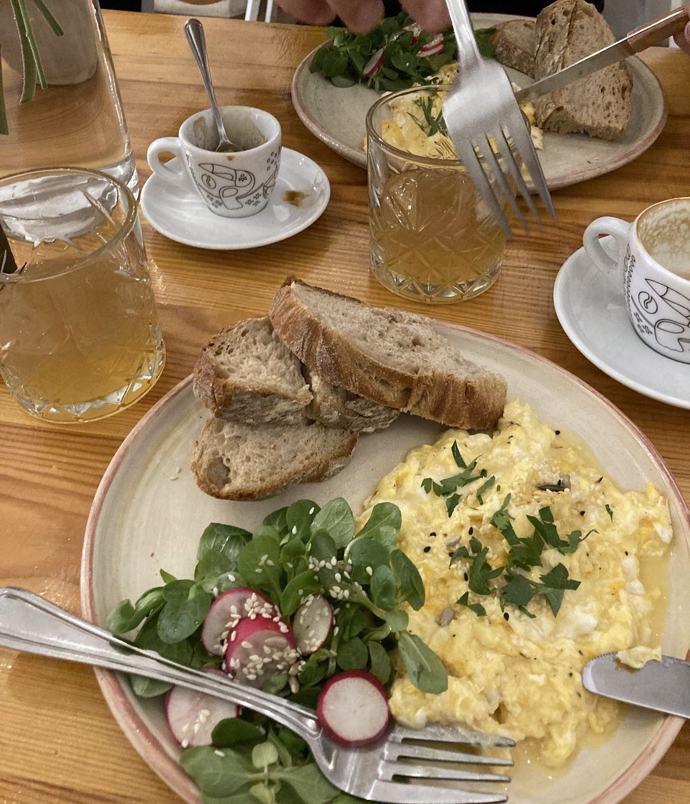
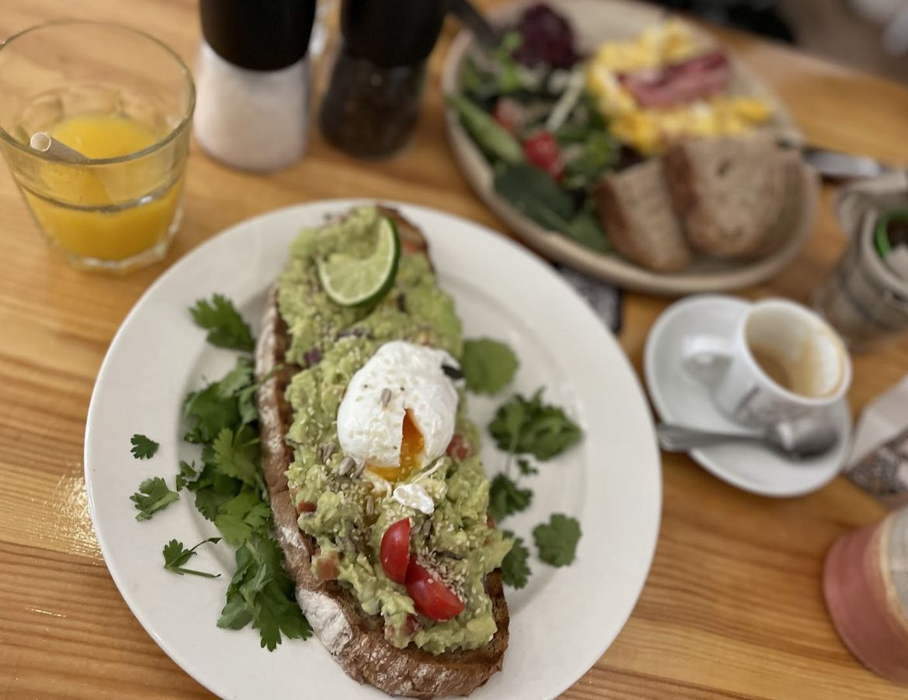
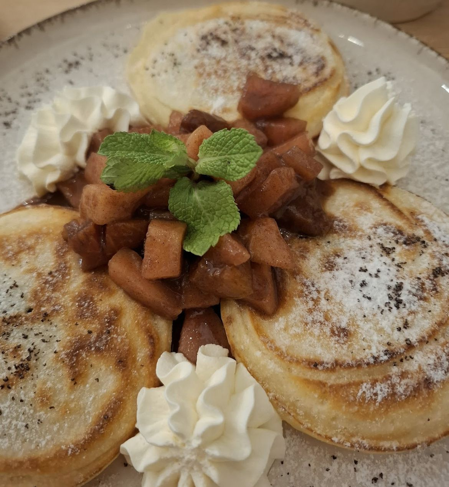
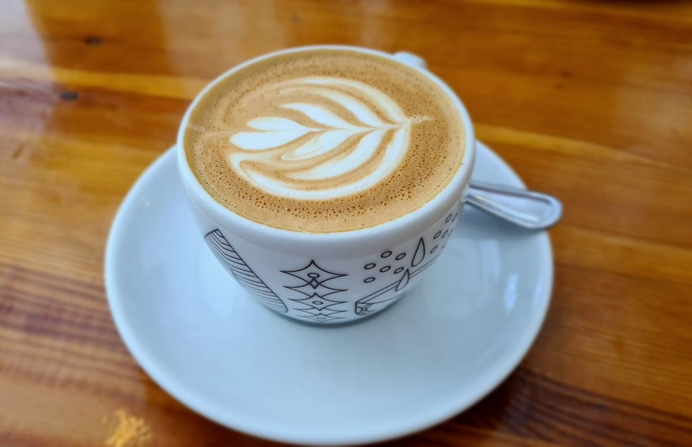
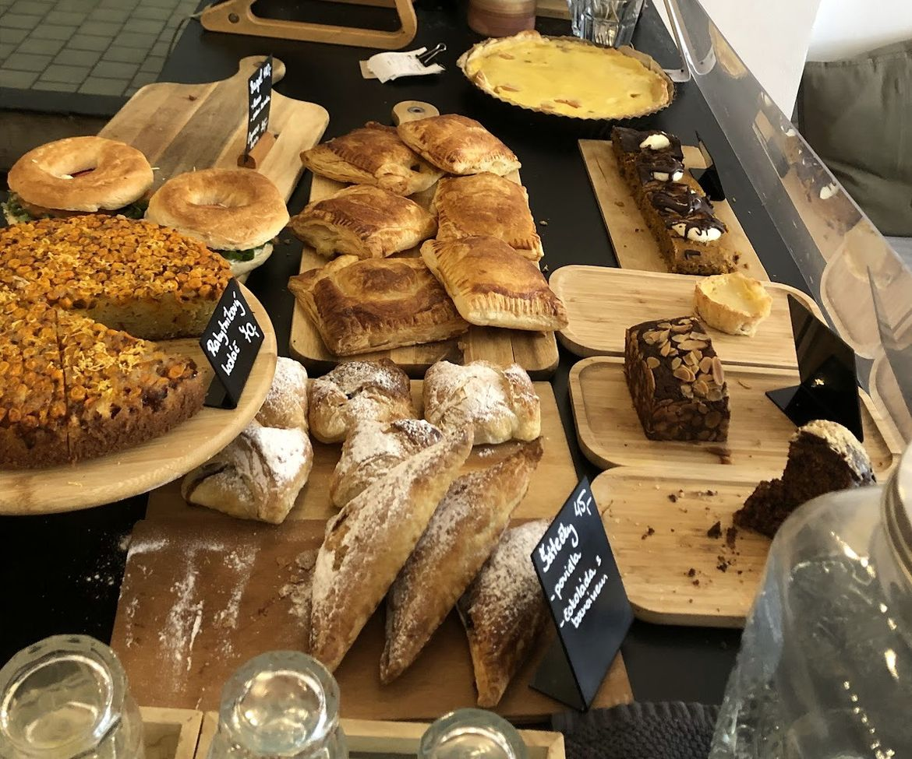
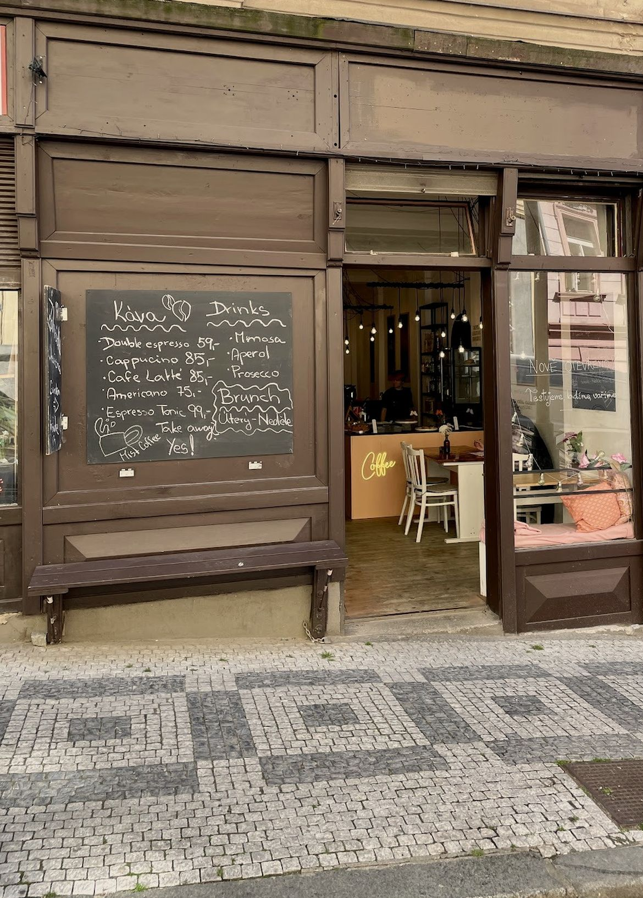
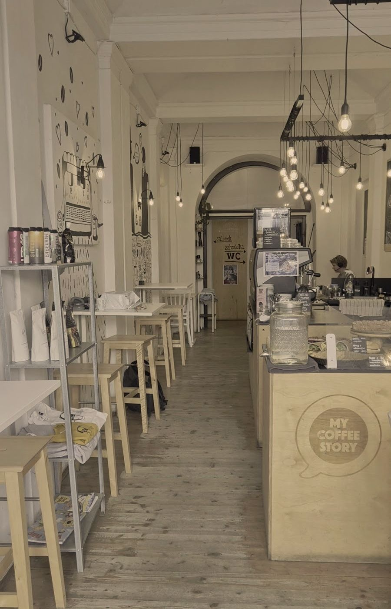

Double espresso 59 Kč, cappuccino 85 Kč
My Coffee
Story

Kavárna na Žižkově, u zastávky Biskupcova.
4,7 z více než 780 recenzí na Googlu
Pondělí až pátek 8:00–18:00, sobota a neděle 9:00–15:00




Brunch je od úterý do neděle.
Ceník
Káva
- Double espresso
- 59 Kč
- Cappuccino
- 85 Kč
- Café latte
- 85 Kč
- Americano
- 75 Kč
- Espresso tonic
- 99 Kč
Z vitríny
- Rakytníkový koláč
- 40 Kč
- Šátečky povidla, nebo čokoláda s banánem
- 45 Kč
K tomu mimosa, aperol nebo prosecco.
S sebou? Ano.

Recenze
„Oáza klidu nebo rychlá záchrana při uspěchaném dni přímo u zastávky Biskupcova. Výborná káva i matcha a luxusní čerstvé koláče a dezerty, jako od babičky.“
Markéta
„Úchvatná stinná zahrádka. 33 schodů. Výborná káva. Milá obsluha.“
Staso
„Kdyby bylo víc hvězdiček, dala bych je bez váhání! Útulné příjemné místo, nesmírně milá obsluha, výborná káva a koláče.“
Petra
U zastávky Biskupcova
130 00 Praha 3 – Žižkov
- Pondělí až pátek
- 8:00–18:00
- Sobota a neděle
- 9:00–15:00
Za obloukem je salonek a cesta na zahrádku ve vnitrobloku.
Telefon 725 791 271
Mapa se načte, až o ni požádáte. Do té doby se nic neposílá.
Otevřít v Mapách Google
